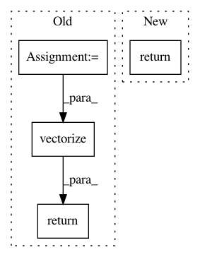

fa1baf601959e2add7f333540247f85ba5d921fc,geomstats/_backend/numpy/linalg.py,,logm,#Any#,71
Before Change
if _is_symmetric(new_x):
eigvals, eigvecs = np.linalg.eigh(new_x)
if (eigvals > 0).all():
eigvals = np.log(eigvals)
eigvals = np.vectorize(np.diag, signature="(n)->(n,n)")(eigvals)
transp_eigvecs = np.transpose(eigvecs, axes=(0, 2, 1))
result = np.matmul(eigvecs, eigvals)
result = np.matmul(result, transp_eigvecs)
else:
result = np.vectorize(scipy.linalg.logm,
signature="(n,m)->(n,m)")(new_x)
else:
result = np.vectorize(scipy.linalg.logm,
signature="(n,m)->(n,m)")(new_x)
if ndim == 2:
return result[0]
return result
def powerm(x, power):
ndim = x.ndim
After Change
def logm(x):
return np.vectorize(
asp.logm, signature="(n,m)->(n,m)")(x)
def solve_sylvester(a, b, q):
if a.shape == b.shape:
In pattern: SUPERPATTERN
Frequency: 3
Non-data size: 4
Instances
Project Name: geomstats/geomstats
Commit Name: fa1baf601959e2add7f333540247f85ba5d921fc
Time: 2021-01-11
Author: nicolas.guigui@inria.fr
File Name: geomstats/_backend/numpy/linalg.py
Class Name:
Method Name: logm
Project Name: facebookresearch/ParlAI
Commit Name: 30675d5387b9823ac8ba9503d60dc39a670f5807
Time: 2019-12-11
Author: roller@fb.com
File Name: projects/self_feeding/self_feeding_agent.py
Class Name: SelfFeedingAgent
Method Name: observe
Project Name: Ghadjeres/DeepBach
Commit Name: 78b322bc60398120625aec1965646efbf73f6d9e
Time: 2016-12-28
Author: hadjeres.g@gmail.com
File Name: data_utils.py
Class Name:
Method Name: chorale_to_onehot